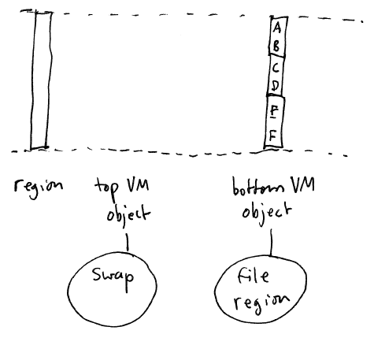
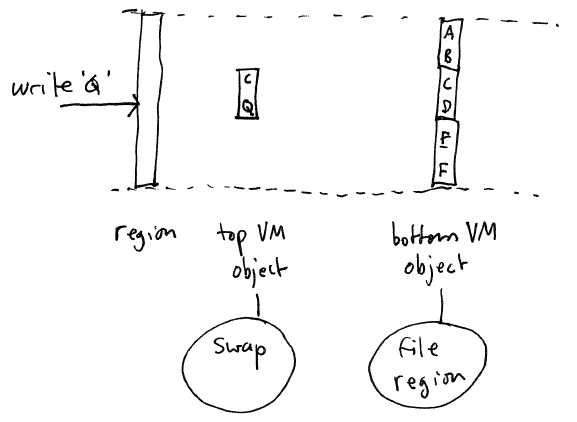

One important use of virtual memory is to support shared memory. Shared memory
is simply a situation where regions of more than one address space use
the same VM object as a backing store, and (importantly) uses the same
physical frames of memory in reach region that maps the object:
Bear in mind that we have discovered a very important property of VM
objects:
Each VM object has a set of frames being
used as a cache for the data of the VM object. If more than one
address space maps a VM object, the same physical frames are mapped
into each address space.
There are quite a few situations where shared memory is useful.
An obvious use is for inter-process communication. Two
processes have separate address spaces, but one region in each process
maps the same VM object (usually an anonymous swap-backed
object). Any stores to memory in the shared region is visible to
both processes.
Another use is shared code regions.
The code in executable files are memory-mapped read-only into a
process's address space when the process starts. If another
process is started using the same executable program, they share the
same frames of memory to map the executable.
Say that we have a 1MB executable
program, and we start 100 processes usnig that program as the
executable.
Without shared code regions, each process
will allocate separate physical memory pages for the executable,
resulting in memory use of 100 * 1 MB = 100 MB.
With shared code regions, each process
will use the same physical memory pages for the executable. The
total memory use will be 1 MB.
Not only does this work for executables, but it also works for shared libraries. On most
operating systems, there is a standard runtime library (usually called
the C library) that defines all of the system-level APIs. As
such, it is used by every process. So, most OSes will map this
library's code using read-only shared memory.
A shared read-only mapping is great for code (executable
instructions): memory containing code is (generally) never modified.
However, consider the data segment of an executable. This
segment specifies the initial data values for global variables and data
structures. The data segment of a process address space (which
maps the data segment in the file) cannot be read-only because a
program may need to assign new values to global variables.
Assignments to global variables should never be visible to other
processes. So, how do we resolve this dilemma?
The answer is to use copy-on-write.
A copy-on-write (COW) region works as follows:
Initially, the copy-on-write region is a
read-only shared mapping
Reads of memory addresses within a COW
region proceed as usual
A write to an address in a COW region
causes a page fault. The page fault handler allocates a new frame
and copies the data for that page of the VM object into the new
frame. The new frame is an exact duplicate of the data in the VM
object, but is private to a single process address space. The
kernel maps this new frame into the address space using a read-write
mapping instead of read-only and restarts the instruction that caused
the fault, which then proceeds to write into the private frame.
COW gives us the best of both worlds: "clean" (unmodified) pages are
shared, while "dirty" (modified) pages are private.
There is a very simple way to implement COW: stacked VM objects.
The idea is that a single address space region maps a stack of VM
objects. When asked to provide a physical memory frame, the top
VM object may either provide one of its own frames (allocated one if
needed), OR it may pass on the
request to the next lower VM object.
A COW region consists of a stack of two VM objects. The top object
is an anonymous swap-backed VM object. It is the backing store
for all modified pages in the region. The bottom object is a
file-backed VM object mapping the data segment of an executable.
Initially, the top VM object is "invisible". Any read from an
address in the COW region causes a frame of data from the bottom VM
object to be mapped into the address space with read-only access.
If a read-only page is modified (causing a page fault), the top VM
object takes over responsibility for that page by copying the page data
from the bottom object into a newly allocated frame and replacing the
read-only mapping of the bottom object's frame with a read-write
mapping of the top object's frame.
To illustrate this idea further, imagine that at first, the region
has mapped only frames in the bottom object, meaning that so far all of
the memory references in this region of the address space have been
reads:

Now, let's say that there is a write to one of the pages in the region. The resulting COW operation copies the original data from the bottom page into a new top page, and replaces the mapping with a new frame mapped read-write. The write instruction is restarted and modifies data contained in the new top frame.

Note that other processes will not see the write because either
They have the bottom VM object's page
mapped read-only
They have a page from their own private
top object mapped read-write
When a process makes a memory reference (either a read or write), a
physical frame of memory must be mapped at the referenced virtual
address, or else a page fault results.
We have seen that in a low-memory situation, the OS kernel may need
to steal a frame that is currently in-use. Now that we know that
frames belong to VM objects, we can fully explain what happens when a
page is stolen.
The OS kernel notifies the VM object that owns the page that it is
being stolen.
If the frame is clean (meaning that its contents
are exactly the same as the data in the backing store), then nothing
special needs to happen. The frame is removed from the VM object
and it can then used elsewhere.
If the frame is dirty (meaning that it has been
modified relative to the version in the backing store), then the kernel
uses the VM object to do a pageout
operation. A pageout means that the modified contents of the
frame are written back to the VM object's backing store. For
example, a swap-backed VM object will perform pageouts by writing the
frame's data to a chunk of the swap file.
Remember the dirty bit stored in each x86
PTE? That single bit allows the OS kernel to quickly check to see
whether or not a page was modified. (Note that it needs to check
each PTE mapping the page, since the page may be mapped into multiple
address spaces.)
When a frame is stolen, it is also unmapped from any address spaces
(page tables) that have mapped it. This creates "holes" in those
address spaces.
At some point, a process may try to reference a page that has been
stolen from its address space. This will cause a page
fault. The OS kernel's page fault handler will locate the VM
object mapped in the fault region and ask it to produce a frame.
It is possible that the VM object already has the needed frame
available, in which case the frame can be immediately mapped back into
the address space. However, it is also possible that the VM
object does not have the needed frame, in which case the OS kernel will
ask it to provide one. The VM object will allocate a new frame
(possibly stealing a frame from elsewhere!) and fill the frame with
data loaded from the VM object's backing store. This operation is
a pagein. Once the
frame has been paged in, it can be mapped into the address space and
the faulting instruction can be restarted.
It should be clear now that the OS can cope perfectly well with
missing pages (holes) in user address spaces. When a missing page
is referenced, it is paged in from the VM object (possibly stealing a
page and causing a pageout).
If you think about it, it is actually possible to execute any
arbitrary program with only a single frame of memory. There will
be lots of pageins and pageouts as the single frame is bounced from one
part of the address space to another, but the program will continue to
make progress and (eventually) terminate. This illustrates the
point that physical frames are only a
cache for data in a VM object's backing store. Like any
cache, they help improve performance, but their existence is (more or
less) not required for the correct functioning of the system.
Once you start to think about virtual memory in this way, you will
see that there is no reason for the OS kernel to map any physical
frames of memory into a process address space when the process is
started. When the process starts executing, it will generate page
faults for each page it references, and the OS can use these page
faults to provide physical frames of memory lazily.
Lazy = Avoiding unecessary work
Laziness is a cardinal virtue of Computer Science.
Lazy allocation of physical memory frames is known as demand paging. Demand paging
makes more efficient use of physical memory by never mapping any pages
not needed by the process, at the cost of some increase in startup time
(because a page fault adds some overhead in running time).